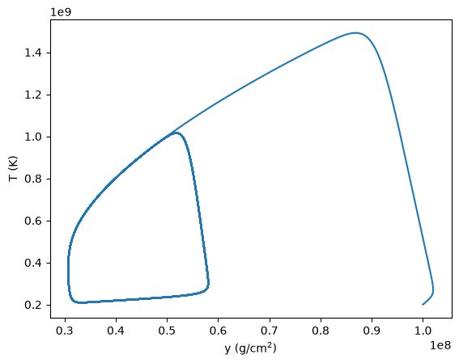
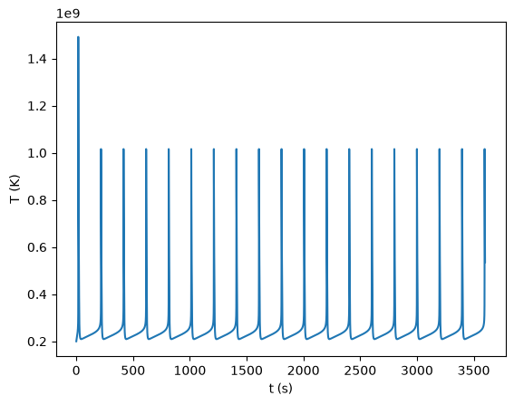
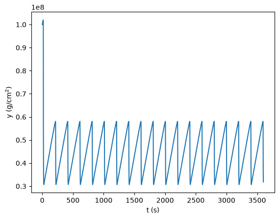

Application: One-zone X-ray burst#
This is a simple one-zone model of a pure He X-ray burst. It follows Heger, Cumming, & Woosley 2007 (HCW07), but we consider the accretion to be pure He to simplify the model. Similar work was explored in Paczyński 1983, and Livio & Regev 1985. This simple system can give rise to repeated bursts (and a limit cycle) depending on the accretion rate.
The basic idea is that a neutron star accretes pure He from a companion star, building up a layer of fuel. As this layer grows, the density and temperature at the base become large enough for the 3-\(\alpha\) reaction to take place. This heating competes with radiative cooling (photons carrying the energy to the top of the atmsophere). Eventually, the heating will exceed the cooling and a thermonuclear runaway takes place (the X-ray burst), consuming the fuel, and then the process repeats.
We want to model this behavior using a single zone representing the accreted layer.
It is traditional to take the accreted layer on the neutron star to be plane parallel, with constant gravity. Then we define column depth as:
where \(y = 0\) at the surface of the accreted layer and increases as we move downward through the layer.
With this definition, hydrostatic equilibrium simply becomes:
Equation set#
We solve evolution equations for temperature, \(T\), and column depth, \(y\):
where:
\(c_p\) (erg/g/K) is the specific heat at constant pressure
\(\dot{m}\) (g/cm\(^2\)/s) is the column accretion rate
\(\epsilon_{3\alpha}\) (erg/g/s) is the energy generation rate for the 3-\(\alpha\) reaction
\(Q_{3\alpha}\) (erg/g) is the energy release per mass from burning
\(Q_\mathrm{deep}\) (erg/g) is heat release from deep crustal heating and gravitational compression. This term takes the form of an energy flux, \(F = \dot{m} Q_\mathrm{deep}\) (see Bildsten 1997).
\(\epsilon_\mathrm{cool}\) (erg/g/s) represents radiative cooling, expressed as an outward radiative energy flux,
\[\epsilon_\mathrm{cool} \approx \frac{F_\gamma}{y} = \frac{acT^4}{3\kappa y^2}\](again, see Bildsten 1997) where \(\kappa\) is the opacity.
The first equation is essentially the first law of thermodynamics, and simply says that the energy increases in the zone due to heat release (\(\epsilon_{3\alpha}\) and \(Q_\mathrm{deep}\)) and decreases due to radiation cooling our zone.
The second equation is conservation of mass. where \(z_\mathrm{base}\) is the physical depth of the fuel layer. So \(y\) is measuring the mass of the fuel (He in our case) in a column on the surface of the neutron star. We see that it increases due to accretion of new fuel (\(\dot{m}\)) and decreases as fuel is burned (\(-\epsilon_{3\alpha} y / Q_\mathrm{3\alpha}\)).
Note
Compared to HCW07, we make the following simplifications:
We accrete pure He, so there is no hot-CNO term in the energy generation
We don’t modify the energy generation to account for burning to Fe-group
We ignore radiation in the pressure, and our specific heat only includes ions
Our opacity is simple constant electron scattering — we don’t worry about T-dependence
Additionally, we find that the crustal heating term is important.
Equation of state#
We’ll assume an equation of state consisting of ideal gas ions / nuclei:
and electrons that can be ideal or non-relativisitic degenerate. The degenerate limit has:
while the ideal gas limit has:
A common approximation (see Paczyński 1983) is to blend these limits as:
We also need the specific heat at constant pressure. We’ll consider only the ions and take:
Nuclear energy generation#
The energy generation comes from triple alpha. The triple alpha rate is:
where \(T_8 = T / (10^8~\mathrm{K})\).
The energy release from 3-alpha is 7.275 MeV or 0.606 MeV / nucleon.
Eddington limit#
For a spherical accretor, the Eddington luminosity is:
and if we look at the accretion luminosity:
we can define the Eddington accretion rate:
we want the column accretion rate, so we divide this by the surface area:
We’ll use this as a reference value for the \(\dot{m}\) we need to specify in our problem.
Implementation#
import numpy as np
from scipy.optimize import brentq
from scipy.integrate import solve_ivp
class XRB:
"""assuming pure He bursts"""
def __init__(self, mdot=1.0, y_0=1.e8, T_0=2.e8,
g=1.9e14, R=1.e6):
self.mdot = mdot
self.y_0 = y_0
self.T_0 = T_0
self.g = g
self.R = R
# mean molecular weights
self.mu_I = 4.0
self.mu_e = 2.0
# constants
self.k_B = 1.38e-16 # erg / K
self.h = 6.67e-27 # erg s
self.m_e = 9.11e-28 # g
self.m_u = 1.66e-24 # g
self.c = 3.e10 # cm/s
self.a = 7.56e-15 # erg / cm**3 / K
# electron degeneracy
self.K = self.h**2 /(20 * self.m_e) * (3.0 / np.pi)**(2./3.) * self.m_u**(-5./3.)
# convert the accretion rate to CGS
mdot_edd = self.c / self.opacity() / self.R
self.mdot *= mdot_edd
# energy release / g from 3-alpha
erg_per_MeV = 1.6e-6
self.Q_3a = 7.275 / 12 * erg_per_MeV / self.m_u
# crustal heating
self.Q_crust = 0.15 # MeV / nucleon
self.Q_crust *= erg_per_MeV / self.m_u
def rho_from_p(self, p, T):
# ions are ideal gas
p_ion = lambda rho : rho * self.k_B * T / (self.mu_I * self.m_u)
# electrons can be ideal gas or degenerate -- we use an approximation to blend
# the two regimes
p_e_ideal = lambda rho: rho * self.k_B * T / (self.mu_e * self.m_u)
p_e_deg = lambda rho: self.K * (rho / self.mu_e)**(5./3.)
p_e = lambda rho: np.sqrt(p_e_ideal(rho)**2 + p_e_deg(rho)**2)
# root find on p to get necessary rho
return brentq(lambda rho: p_ion(rho) + p_e(rho) - p, 1.e2, 1.e8)
def c_p(self, rho, T):
"""specific heat -- we assume ions are all that matters"""
c_p_ions = 2.5 * self.k_B / (self.mu_I * self.m_u)
return c_p_ions
def opacity(self):
"""electron scattering (no H)"""
return 0.2
def energy_generation(self, rho, T):
T8 = T / 1.e8
return 5.09e11 * rho**2 / T8**3 * np.exp(-44.027 / T8)
def rhs(self, t, state):
T, y = state
# pressure comes just from plane-parallel approximation
p = self.g * y
# find the corresponding density
rho = self.rho_from_p(p, T)
# now compute the microphysics
kappa = self.opacity()
c_p = self.c_p(rho, T)
eps = self.energy_generation(rho, T)
# compute the outward (cooling) flux
F = self.a * self.c * T**4 / (3.0 * kappa * y)
dTdt = (1.0 / c_p) * (eps + self.Q_crust * self.mdot / y - F / y)
dydt = self.mdot - eps / self.Q_3a * y
return np.array([dTdt, dydt])
def evolve(self, tmax):
sol = solve_ivp(self.rhs, [0, tmax], [self.T_0, self.y_0], method="BDF", rtol=1.e-8)
return sol
Exploring solutions#
Let’s create a burst with the default settings and evolve it for an hour
b = XRB()
sol = b.evolve(3600)
import matplotlib.pyplot as plt
fig, ax = plt.subplots()
ax.plot(sol.y[1,:], sol.y[0,:])
ax.set_xlabel("y (g/cm$^2$)")
ax.set_ylabel("T (K)")
Text(0, 0.5, 'T (K)')

fig, ax = plt.subplots()
ax.plot(sol.t, sol.y[0,:])
ax.set_xlabel("t (s)")
ax.set_ylabel("T (K)")
Text(0, 0.5, 'T (K)')

fig, ax = plt.subplots()
ax.plot(sol.t, sol.y[1,:])
ax.set_xlabel("t (s)")
ax.set_ylabel("y (g/cm$^2$)")
Text(0, 0.5, 'y (g/cm$^2$)')
